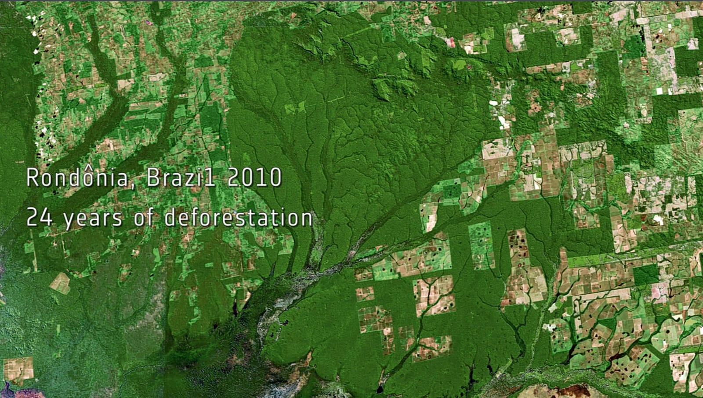

Deforestazione
Aurora boreale
Dopo
L’Impatto della Deforestazione
Oggi, vaste porzioni della foresta amazzonica sono scomparse. L’agricoltura intensiva, l’allevamento, il disboscamento illegale e la costruzione di infrastrutture hanno cancellato milioni di ettari di verde. Le immagini satellitari mostrano cicatrici marroni dove un tempo regnava la vita. Gli effetti sono drammatici: la riduzione della biodiversità, l’aumento delle emissioni di CO₂, il cambiamento dei regimi climatici regionali, e la perdita irreversibile di habitat. Alcuni scienziati temono che l’Amazzonia stia raggiungendo un “punto di non ritorno”, oltre il quale non sarà più in grado di rigenerarsi. Anche le popolazioni indigene soffrono: territori ancestrali vengono invasi, le fonti d’acqua inquinate, le tradizioni minacciate. Il futuro dell’Amazzonia è ora al centro del dibattito globale, e la sua protezione è diventata una delle sfide più urgenti per la sopravvivenza del pianeta.